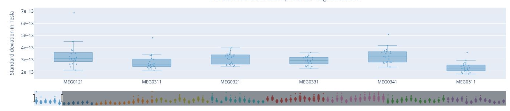
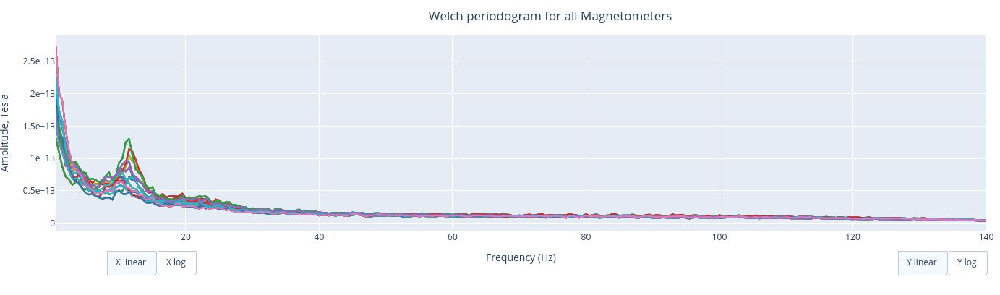
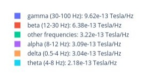
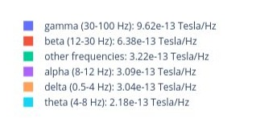
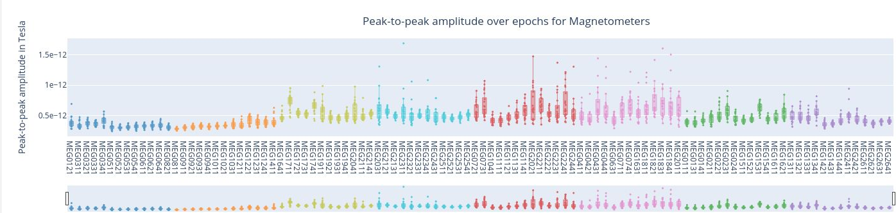
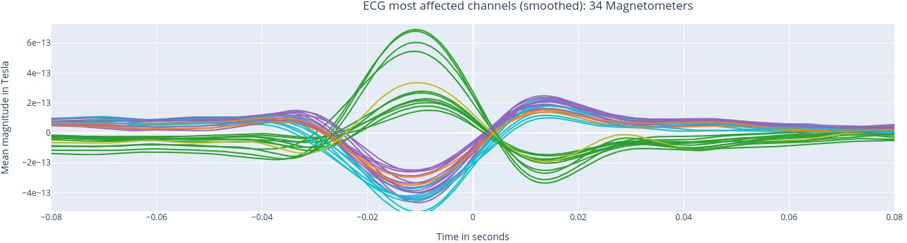
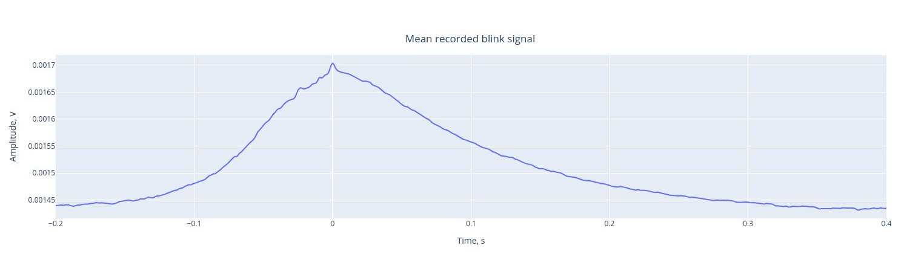

MEGQc report:#
Every metric generates an html report. All the figures in these reports are interactive: as you scroll through them, you can zoom in and out, reveal the legend on hover, hide/show specific epochs or channels within a specific region just by clicking…
Unfortunately, this interactive feature is lost in this tutorial, as we’ll work with screenshots. If you want to explore ther interactive feature by yourself, you can download here all the reports that we’re going to use in this preview. Once downloaded, you can open them up in your internet browser (such as Google Chrome or Firefox) but it might need a bit of time as the plots are dynamically generated by Java.
Raw Information#
The following information is not directly visible in this report, but it’s important to understand it. MEG QC extracts the data as an MNE Raw class object. The Raw object includes metadata such as the channels’ details, distinguising among Gradiometers and Magnetometers (more on that later), EOG and ECG channel, sampling frequency, filters applied, and so on.
Sensors positions#
Almost every report starts with this visual representation of the spatial distribution of MEG sensors on the subject’s head. The sensors are divided into eight color-coded groups representing different head regions. The same color-code will be used pretty often in the reports. Every sensor dot has 3 different identifiers:
1 Magnetometer: names end with ‘1’ like ‘MEG1011’. They measure the magnetic field directly, providing data on its strength and direction. They are more sensitive to distant source, so they are more vulnerable to external magnetic noise.
2 Gradiometers: names end with ‘2’ and ‘3’ like ‘MEG0112’ and ‘MEG0113’. These sensors measure the gradient of the magentic field, so the difference between 2 measuremenets. It filters out environemntal noise.
The identifiers pop-up on hovering with the mouse in the interactive .html.
Many of the reports include 2 sets of results: one for the Magnetometers and a second one for Gradiometers. Here we’ll just overview the set for Magnetometers, but the one for Gradiometers follow the same logic.
Metrics#
Standard deviation of the data#
The Standard Deviation provides an overview of the variability from the recorded signal and it allows us to identify outliers among the sensors.
In this box plot every dot represents the standard deviation of each Magnetometer over the entire time series. The sensors are colored following the region distribution of the previous plot. If you hover over the dot you’ll see the standard deviation value. You can also deactivate or activate sensors from specific brain regions. The position of the points on the Y axis are not meaningful, they are just for visualization purposes.
If a dot falls outside of the whiskers, it means that that specific sensor might be a potentital outlier over the entire time series.
Each box plot in this figure corresponds to a channel or sensor, and each point represents the standard deviation for that sensor during an individual epoch. These epochs are created by segmenting the continuous MEG recording basend on triggers in the dataset. The time window for each epoch is defined within the settings. By hovering over any of the points, users can read the specific epoch represented. This plot helps asses the variability of each sensor’s signal across different time windows (epochs). Sensors with points outside the whiskers indicate higher variability, potential artifacts or irregularities in specific epochs.

The lower horizontal bar at the bottom allows users to zoom in on a subset of sensors. This feature enables a closer examination of how the standard deviation changes within 6 sensors of the Left Frontal area across all epochs.

Each box plot represents the standard deviation for all sensors within a single epoch. Each dot show the standard deviation value for every specific sensor during that epoch. The sensors are colour coded following the sensor location first figure.
This type of figure is most relevant for experiments with relevant time events.
Once again, we can use the horizontal bar at the bottomw to zoom in on a subset of sensors. This visualization helps to visually detect in 5 periods where multiple sensors had an increased variability.
We can make interpretations or especulate if outliers might be due to muscle activity, external noise or transient artifacts, but MEG Qc only reports these anomalies.
As it was mentioned before, this set of figures gets repeated for Gradiometers.
Power Spectrum Density#
The Power Spectrum Density describes how the power of a signal is distributed across different frequencies. PSD calculation helps us to distinguish between brain activity and non-brain-related noise.


This circle chart represents the Signal-to-Noise Ratio (SNR), which is a measurement of the ratio of the signal power to the noise power. A high SNR indicates minimal corruption of the signal of interest by background noise. The prominent amplitude of the 11.5 Hz labels it as potential noise.

The Welch periodrogram is commonly used to estimate the power of a signal at different frequency components.
The X-Axis represents the frequency range of the signal (from 0 to 140 Hz in this case).
The Y-Axis represents the amplitude of the signal.
Each colored line represents the PSD forthe different magnetometers. As it was previously reported, there’s a visible peak at 11.5 Hz.
 In the .html one can zoom-in and to adjust the scale of the axes: one can toggle between a linear view or a logarithmic view both for the X-axis and the Y-axis independly. Logarithmic view can be useful to show growth rate insteasd of absolute values.
In the .html one can zoom-in and to adjust the scale of the axes: one can toggle between a linear view or a logarithmic view both for the X-axis and the Y-axis independly. Logarithmic view can be useful to show growth rate insteasd of absolute values.
 

Each segment of this circle chart represents the proportion of the total signal power that falls within each frequency range. How much does every frequency band contribote to the overall signal.
Peak to Peak Amplitude#
Peak-to-Peak (PtP) amplitude refers to the difference between the maximun and the minimun values of a signal. High PtP values suggest a strong brain signal or large fluctuations of the signal. Meanwhile, a low PtP might indicate that the signal was weak, with low variations, or rather that the data has been corrupted by noise.
The PtP amplitude of the data over the entire time series represents how the PtP amplitude of every sensor varies over the entire time series. Every dot represent the PtP amplitude of a single sensor. If a sensor falls outside of the whiskers area, it might indicate that the sensor is malfunctioning or other issues.
The position in the Y Axis is not meaningful, but serves visualization purposes.

In this plot, each box plot represents a specific sensor (colour coded by areas) and each point the PtP AMpltiude for that sensor during a specific epoch (time window).
In this plot, each box plot represents an epoch and each point the PtP AMpltiude of the sensors during that specific time window.
ECG: heart beat interference#
Heartbeat interference is a common source of noise in MEG recordings. This intereference shows up as a periodic artifact. That’s why, analyzing the ECG channel helps in separating these artifacts from brain activity.

First we have a short overview with key criteria about the ECG signal recorded. If the heartbeats were recordend in a consisten way (similar amplitude), without missing beats (no breaks) neither false detections (no bursts). This is relevant for the channel to be a suitable heartbeat artifact identification.

First, we see the ECG signal (blue line) captured by the ECG channel (ECG062), the red fots marks the R-peaks of each heartbeat. The R-peaks is one component of the electrical activity of the heartbeat which can be easily use as a reference to identify heartbeat intereference.

The mean recorded R wave (from the ECG channel, proper heartbeats) was shifted to align the ECG signal found on MEG channel (similar to the ECG signal). This alignment helps us understand how much influence the heartbeat interfere with the MEG channels. Then a Pearson correlation its performed between the ECG signal found in each channel and the reference mean signal of the ECG.
The following 3 plots highlights the MEG channels affected by heartbeat interference. Each line representes one MEG sensor, colour-coded by region. The plots are ordered from the most affected to the least affected.



EOG: eye movement interference#
Eye movements and blinks create strong artifacts. The EOG (Electrooculogram) sensor records this eye activity and can be used to detect and remove these artifacts from the MEG data.
This plot shows the EOG signal over time (blue line). Each blink produces a peak, which is labeled by the red dot.

This is the mean event shape, which indicate the typical shape of a blink as captured by the EOG channel and allow us to understand its influence on MEG sensors.
Similar to the ECG report, these three plots show those MEG channels affected by the blink artifact, ranked from the most affected to the least. This help us to identif channels that may require artifact correction before analysis.
High frequency (Muscle) artifacts#
This metric highlights high-frequency artifacts in the 110-140 Hz range, which often correspond to muscle activity, as suggested by MNE. This report includes a single plot displaying the z-scores of high frequency (blue line) and events (red-dots) where the z-score exceed the threshold of 5 (default in settings)